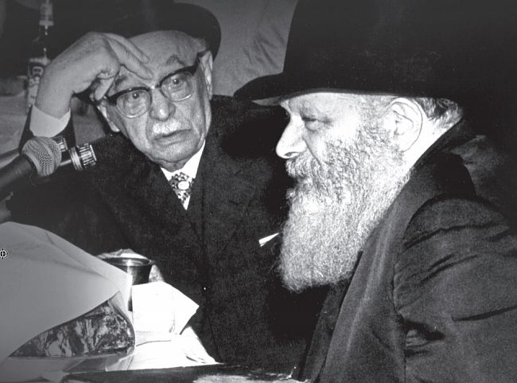

Presidential Visit or a Chassid Meeting His Rebbe?
12 Tammuz 5733. 7:45 – Shazar arrives in 770 and enters yechidus; 9:15 – the Rebbe and Shazar come out for Maariv; 9:30 – the farbrengen begins, with Shazar sitting alongside the Rebbe and his security detail behind him; 2:00 – the farbrengen concludes and Shazar goes in with the Rebbe to yechidus; 4:00 – Shazar leaves the yechidus accompanied by the Rebbe, concluding an entire night spent with the Rebbe. In retrospect, it becomes clear that this is the final visit of Shazar to the Rebbe. * Fascinating reports and memories from Tammuz 5733 with the Rebbe, published for the very first time from the diary of the late R ’ Saadya Maatuf .
By Rabbi Saadya Maatuf

Sunday, 1 Tammuz, 5733
Today there was yechidus, during which [the following T’mimim] went in for yechidus: Shabtai, Moshe’le Orenstein [then a Tamim after his k’vutza year who was visiting 770, and is now the lead mashpia in the Chabad yeshiva in Tzfas], and another two T’mimim who are olim from Buchara. Maariv took place after yechidus at 12:20.
Tuesday, 3 Tammuz
The Rebbe went to the Ohel today, and as is customary we davened Mincha late. We were hoping for a farbrengen [in honor of 3 Tammuz, the day of Geula] but there was none.
Thursday, 5 Tammuz
The Rebbe came out for the Torah reading. The Rebbe did not say T’hillim as usual between the reading and the returning of the Torah to the Aron Kodesh, but he was reading a Rashi [inside a Chumash]. (As per the custom of the time, there were Chassidim who would leave a Chumash and/or a T’hillim at the Rebbe’s place, and after the Rebbe would look inside it, they would keep it.) The T’hillim and Chumash belonged to [Nesanel] Dreyfus.
This evening there was yechidus. Until the davening (the T’mimim at the time, including the author of the diary, would wait for the end of yechidus to daven with the Rebbe at the late hour), I wrote a sicha to my brother Moshe (R’ Moshe Maatuf, currently of Nachlas Har Chabad, i.e. he made a hand-written copy of a recent sicha). Today, the Tamim Chaim Tzadok went in for yechidus. He was there for six minutes and twenty seconds, which is obviously a lot of time for a bachur. Two members of the American parliament (i.e. Congress or Senate) went into yechidus. Maariv was at 12:35.
Motzaei Shabbos, 7 Tammuz
We thought that there would be a farbrengen this Shabbos, but it didn’t happen. This evening, the Rebbe sanctified the new moon, and I stood close to the Rebbe.
Monday, 9 Tammuz
Today there was a funeral procession for a Lubavitcher woman. We went [from where the k’vutza would learn in Chovevei Torah] to 770, at 12 o’clock, as that was the time written on the notice. However, the procession was delayed and did not begin until 1:30. The Rebbe came out, and we accompanied the deceased until past Kingston, where the hearse proceeded on its way. At this point, the Rebbe turned around to head back, and we all immediately pushed to the side because we did not know which way the Rebbe would turn. A few seconds passed, and the Rebbe went exactly towards the place where we were all crowded together, and we hurriedly crossed to the other side. We walked behind the Rebbe. They had seen to it in advance that there be a washing cup with water placed outside 770 for the Rebbe to use. The Rebbe poured water four times on each hand, and entered the small zal [upstairs in 770], where he began to say “Yosheiv B’seiser” (T’hillim 91) [as is the custom after a funeral]. I stood in a good place and I could see the Rebbe. At one point during the recital of “Yosheiv B’seiser,” the Rebbe stood up to take a piece of paper off a Chumash that was nearby. Halperin got a hold of the paper to keep for himself. We returned to Chovevei Torah.
The father-in-law of Menachem Lerer (R’ Chaim Binyamini of Brazil) arrived from Eretz Yisroel exactly as the Rebbe exited from davening Mincha, and the Rebbe asked him, “You arrived now?” and he answered in the affirmative. The Rebbe said to him, “In a good and auspicious time.”
Wednesday, 11 Tammuz
Today, two students arrived from Yeshivas Toras Emes; one of them was already here [on k’vutza] and his name is Moshe Klein (today of Crown Heights). Today they replaced the floor tiles in Gan Eden HaTachton.
ROYAL VISIT ON THE CHAG HAGEULA
Thursday, 12 Tammuz, Chag HaGeula
Today, we moved [from the regular learning place of the k’vutza in Chovevei Torah] to learn in 770. After davening, we went looking for a car ride to take us to the Ohel, as is the custom to visit the Ohel on this day. Therefore, we also did not eat before going. We made every effort to find a ride, but we were not successful. The T’mimim [from the k’vutza] Chaim Tzadok and Dovid Malka made a list of all those who wanted to go by bus, and there were about forty [so they ordered a special bus to take the T’mimim to the Ohel]. We went to the Ohel and said the Maaneh Lashon.
We did all the customs one is supposed to do at the Ohel, taking off our shoes outside, and each person read his pa”n and said the Maaneh Lashon, and we were there [in the Ohel davening] for an additional half an hour. As is the custom, after reading the pa”n we tore them into pieces and placed them on the tziyon.
We traveled back to 770 and davened Mincha with the Rebbe. For some reason, the Rebbe stood throughout the repetition of the reader, even though the Rebbe usually sits. Apparently, someone was standing and davening opposite where the Rebbe sits, so that the Rebbe did not sit down.
I went to eat supper, and then I heard that Shazar was coming to visit the Rebbe. I did not believe it at first, because we had not even heard that he had traveled outside of Eretz Yisroel. However, in the end I did believe it and I came to 770 and waited along with everybody else [on the sidewalk in front of 770] near the fence of the yard. Before we arrived, many police officers and American and Israeli security agents had set up their posts on the spot.
Shazar arrived at about 7:45, and the Rebbe went out to greet him until the first steps up from street level, and when he exited the car, Shazar spread open his hands and gave greetings to the Rebbe and they kissed on both sides, and I could see the Rebbe kissing him. Afterward, the Rebbe held Shazar’s arm, and Shazar walked with a stick, as he is already quite old, and we walked behind them until the steps to the entrance where the police blocked us, and the Rebbe entered his room with Shazar. A few of the elders of Anash and Shluchim also entered. The shliach of the Rebbe to Morocco (apparently the writer means R’ Binyomin Gorodetzky) told over afterward that every question that Shazar asked, the Rebbe answered that “We will talk about it in yechidus.”
Meanwhile, R’ Leibel Groner entered with a pitcher of tea followed by R’ Binyomin Klein with a tray of baked goods and napkins, while we the T’mimim, half of us inside and the other half outside, grabbed places to stand for Maariv. The Rebbe came out at 9:15 with Shazar to Maariv. It was very crowded, and the Shin Bet people stood right next to the Rebbe and Shazar, so they blocked the Rebbe from our view. Immediately after Maariv, the Rebbe went down with Shazar from the small study hall straight to the big hall for the farbrengen.
The Rebbe began to speak at about 9:30, and between the sichos the Rebbe spoke with Shazar twice. The Rebbe did not speak about “Who is a Jew,” but mainly about chinuch-education. The farbrengen was relatively large, and they added seats. The pyramid in the direction of the Aron Kodesh was moved further in the direction of the Aron.
During the niggun before the maamer, Shazar stood together with all the elders [who would stand behind the Rebbe], and as soon as the Rebbe began the maamer he sat down, because he is quite old (this was shortly after he had flown in from Mexico) and he does not have the strength. After the maamer, the Rebbe instructed that they sing the niggun called the “Beinoni,” and after that the “Four Stanzas” of the Alter Rebbe. Following that, the Rebbe spoke again briefly and then said that they should make an appeal for Kupas Rabbeinu. Then he instructed that they sing “Nye Zhurtise Chloptzi.” The Rebbe stood up to his full height and clapped his hands, and immediately sat down again.
At the end of the farbrengen, the Rebbe began to sing “Ki B’Simcha Seitzeiu” and went with Shazar to his room. We waited endlessly, because we thought the Rebbe would go out right away to accompany Shazar on his way, but the Rebbe spoke with Shazar from the end of the farbrengen at around 2:00 until four in the morning. At that time, the Rebbe exited with Shazar, and immediately the bachurim [who were surprised by the Rebbe’s sudden appearance] who were standing in Gan Eden HaTachton and the hallway, ran outside. The police reacted with alarm, thinking that something had happened, but they quickly realized that the Rebbe had exited and they opened a path for Shazar.
The Rebbe stood with Shazar and said to R’ Groner that he should bring a flashlight to light the way for Shazar, because it was quite dark. R’ Groner turned to one of the policemen and asked him for his flashlight and lit up the path. The Rebbe parted from Shazar with a kiss, and the Rebbe waited until the honored guest entered the car. The Rebbe turned around, and all the Chassidim moved aside, but there was one policeman there standing with his back to the Rebbe, and one of the Chassidim immediately pulled him aside.
Shazar drove away and the Rebbe entered his room. After a brief time, the Rebbe stepped out of his room and we began to sing “Ki B’Simcha Seitzeiu,” and the Rebbe entered the car of R’ Klein. We waited until the Rebbe’s car could no longer be seen from our vantage point.
TO DRINK THE ENTIRE CUP
Friday, 13 Tammuz
This Shabbos, as is the custom after a “major farbrengen” [when 12 Tammuz is on a weekday], there is a farbrengen on the following Shabbos, and as mentioned previously and is well known, we look forward to each farbrengen with a great yearning.
Shabbos Parshas Balak, 14 Tammuz
Today there was a farbrengen, and during the farbrengen, the Rebbe saw R’ Hecht standing opposite him and told him to say “L’chaim.” He looked for a cup and found a shot cup; they poured him some wine and he prepared to say L’chaim. The Rebbe said to him that it must be “miyam ad yam” (from sea to sea). He did not understand the reference, so the Rebbe repeated that the cup must be “miyam ad yam,” meaning a larger cup. Somebody immediately handed him a cup and they filled it up to the top, and he said L’chaim and drank the whole thing in one shot. The Rebbe then said something to him in English, indicating that the cup had to be completely emptied and that is what he did, making sure that he drank it all. Afterward, the Rebbe suddenly became very serious and began the sicha.
At the end of the farbrengen, the Rebbe called for a bar mitzva boy by name [who apparently had just celebrated his bar mitzva], and they waited for him to come up. The Rebbe told him to say L’chaim. There was another boy who had come with his father as a guest and was sitting near the Rebbe, and the Rebbe called him over and wrapped a piece of cake in a napkin and handed it to him. R’ Groner told the boy to make a blessing out loud, and the boy made the blessing and the Rebbe answered Amen.
After Mincha and the Shabbos meal, the students of k’vutza led by Moshe’le Orenstein began to review the sichos that were said at the farbrengen. After Maariv and Havdala, there was no review with R’ Yoel Kahan because his mother had passed away, so the bachurim reviewed the sichos on their own.
VARIOUS VISITOR ACCOUNTS
Tuesday, Fast of 17 Tammuz
During Shacharis, we did not say Tachanun because there was a chassan. In the Slichos, when the reader got up to “Rachamana D’Anei,” the Rebbe banged on his lectern and we began to sing the well-known niggun to those words. When the reader reached Avinu Malkeinu, there was a question if it should be said or not, because the chassan was present. The cantor asked R’ Meir Harlig, and he did not know what to answer. The cantor then turned to R’ Gershon Mendel Garelik who was standing nearby, and he also did not know what to say. In the end, they decided not to say it and the cantor began to say Kaddish, but the Rebbe banged on his lectern and expressed surprise as to why they were not saying Avinu Malkeinu.
R’ Meir Harlig answered that it was because there was a chassan, but the Rebbe replied that it was not connected. The cantor wanted to start singing Avinu Malkeinu, but the Rebbe instructed that the Kaddish be completed first. He then finished the Kaddish, and the Rebbe banged on the lectern and we all began to sing Avinu Malkeinu. (The diary entry goes on in detail about how there was a chassan at Mincha as well so they did not say Tachanun, but they did say Avinu Malkeinu.)
Shabbos Parshas Pinchas, 21 Tammuz
Today there was no farbrengen. This Shabbos, R’ Hillel Medalia, a rav from Belgium who had put his name in the running for Chief Rabbi of Tel Aviv, came to 770 and spoke with the bachurim in learning and displayed great fluency in Gemara. He is not a Chassid, but he does consider himself a Chabad Chassid because that is what his father was (his father was R’ Shmaryahu Medalia, may Hashem avenge his blood, one of the distinguished Chabad rabbis in Russia).
Also on this Shabbos, there was a writer from the news publication “Shearim” (Yitzchok Hildesheimer), and he expressed his great admiration for the Rebbe and told us that the year prior, when he went into the Rebbe for yechidus, the Rebbe asked him about his relative [Rabbi Doctor Ezriel Hildesheimer] if he was still serving as the director of the Rambam Library in Tel Aviv. He responded that his relative had gone into pensiya (Hebraicized form of the English word pension), to which the Rebbe said to him, “Apparently what you mean is gamlaut (the correct form in modern Hebrew),” and he answered in the affirmative. He added that the Rebbe spoke to him literally in “sabra” Hebrew and not pure Lashon HaKodesh.
Sunday, 22 Tammuz
Today, the Rebbe took people for yechidus, and one of those who went in was the aforementioned R’ Hillel Medalia. Also, R’ Yehoshua Futterman and his wife [from Nachalas Har Chabad], and the principal of the school in Moshav Brosh went in.
There was someone who went in with his son. The father appeared to be not religious, and the son was about three years old with a bandage on his hand, and nobody knows what happened to his hand. They entered the Rebbe’s office with a silver tray. When they left, the bachurim did not work up the nerve right away to ask them what the Rebbe had said. Only when they got outside did the bachurim approach them and ask them in English, obviously, and they said that the Rebbe had given them the address of an expert doctor and had also looked at the hand himself.
We already understood that this would be a story with a positive outcome, especially when we saw that the bandage was in the father’s hand, and not on the hand as it was when they went in. As far as the silver tray, they said that they had brought it as a gift for the Rebbe, but the Rebbe told them that he does not accept gifts for a pidyon nefesh. However, so as not to offend them the Rebbe did accept the tray, and he gave the boy a silver dollar coin, along with a small siddur and said that they should teach the boy the Alef-Beis from this siddur.
R’ Yehoshua Futterman recounted that in the yechidus, the Rebbe read the note and began speaking to him in English, but he had the nerve to tell the Rebbe that if possible to speak in Hebrew, since his wife did not understand English. The Rebbe spoke to them in Lashon HaKodesh, and his wife left the room in amazement over the Rebbe. Her husband said that she said that she was certain that the Rebbe had ruach ha’kodesh (Divine sight). Among the things that he told over was that the Rebbe said to his wife that she had no reason to fear and worry, and she should think that just as Hashem is present in this room, so too is He present in every place. (I spoke to R’ Yehoshua about what was recorded in this diary, and he confirmed it and added that his wife had been fearful of going home at night from her place of work in Kiryat Malachi, and it was this problem that the Rebbe addressed – SZB.)
SENDOFF FOR
SHLIACH TO TZFAS
Thursday, 213 Tammuz
During Shacharis, after the raising of the Sefer Torah, the one who rolled it up did not align the seam so that it was in the middle, and the Rebbe motioned to R’ Dovid Raskin to align the seam in the middle. When the Rebbe came out for Mincha, he gave tz’daka to a poor person standing in the doorway.
Today there was yechidus, and [Nesanel] Dreyfus went in for yechidus, as well as Yosef Segal, Yaakov Levin and Nesanel Segal. Another person to go into yechidus was a Jew from Eretz Yisroel, [Reb] Yehonadav Ben Chorin from the city of Rechovot, a lecturer in the Chabad synagogue in his city (later the founder of the Ezra HaSofer synagogue and rav of the Oshiyot neighborhood in Rechovot), and he came for only seven days. He told over that the Rebbe was mekarev him very much, extended his hand to him and told him to sit, and the Rebbe spoke to him in very fluent Hebrew.
Motzaei Shabbos, Mattos-Massei, 28 Tammuz
This Shabbos was Shabbos Mevarchim. The Rebbe farbrenged and said a sicha attacking the leaders of the Mizrachi party on the matter of Mihu Yehudi and on the matter of the Old City. The Rebbe also spoke about the need to make pilpulim in Nigleh and Chassidus. The Rebbe gave mashke to the principal of Brosh, and to R’ Dovid Raskin he gave a bottle of wine and cake with which to arrange a farbrengen.
After Mincha, they announced a farbrengen to be held on Sunday as a farewell party for the shliach of the Rebbe to Tzfas, R’ Leibel Kaplan. The Rebbe instructed him to build a Chabad neighborhood in Tzfas, and a Chabad school and kollel. Interestingly, I heard that the Rebbe told him to speak Lashon HaKodesh and not modern Hebrew. The Rebbe began to sing “Nyet, Nyet,” and the Rebbe left.
Sunday, 29 Tammuz
Today, there was a farewell farbrengen [for R’ Leibel Kaplan], and R’ Dovid Raskin distributed wine and cake from the Rebbe. R’ Yoel Kahan reviewed one of the sichos from Shabbos.
Today, the Rebbe went to the Ohel as usual on Erev Rosh Chodesh, and before the trip, the shliach R’ Leibel Kaplan and his wife and son went in for yechidus. When the Rebbe went out to the car, he distributed tz’daka to three poor women waiting outside.
The abovementioned R’ Yehonadav Ben Chorin received mashke from R’ Chadakov along with fifty liras. He told him that half of the money should be given to tz’daka, and with the rest he should arrange a farbrengen.
Berger. "Presidential Visit or a Chassid Meeting His Rebbe?." Beis Moshiach, no. 1075 (July 6, 2017).